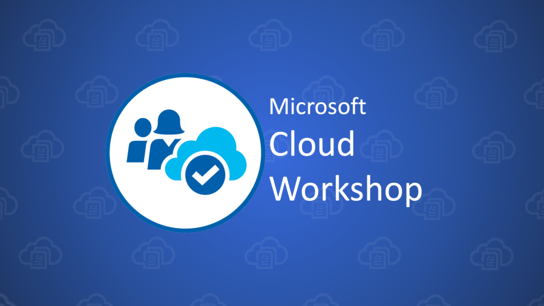

Business runs better on AWS

20 March 2024 - Cape Town CBD - At this event we will take you through real examples of businesses that have benefitted from making the switch to AWS.
Azure workshop on compliance
April 10 - This full day workshop will take you from zero to hero in everything related to compliance in Microsoft Azure.
Learn cloud fundamentals from local experts
Cape Town is full of industry experts ready to share their cloud journey with you. Join us on May 14 2024 in Observatory to grasp the fundementals of cloud computing.